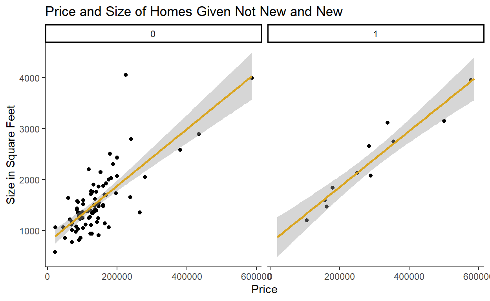

Assignment 3 for DACSS 603 course ‘Quantitative Data Analysis’: “Multiple Regression”
For recent data in Jacksonville, Florida, on y = selling price of home (in dollars), x1 = size of home (in square feet), and x2 = lot size (in square feet), the prediction equation is “ŷ = −10,536 + 53.8x1 + 2.84x2”.
x1 <- 1240 #square feet of the home
x2 <- 18000 #square feet of the lot
y <- 145000 #selling price of the home
# using the prediction equation here:
ybar1 <- (-10536)+(53.8*x1)+(2.84*x2)
residual1 <- y-ybar1
ybar1
[1] 107296residual1
[1] 37704x1b <- 1241 #square feet of the home
x2b <- 18000 #square feet of the lot
yb <- 145000 #selling price of the home
ybar1b <- (-10536)+(53.8*x1b)+(2.84*x2b)
residual1b <- yb-ybar1b
ybar1b-ybar1 #difference in predicted home price given increase in quare feet of the home by "1"
[1] 53.8need <- 53.8/2.84
need
[1] 18.94366The data file (alr4 R Package) concerns salary and other characteristics of all faculty in a small Midwestern college collected in the early 1980s for presentation in legal proceedings for which discrimination against women in salary was at issue. All persons in the data hold tenured or tenure track positions; temporary faculty are not included. The variables include degree, a factor with levels PhD and MS; rank, a factor with levels Asst, Assoc, and Prof; sex, a factor with levels Male and Female; Year, years in current rank; ysdeg, years since highest degree, and salary, academic year salary in dollars.
First I’m loading the “salary” data and inspecting it.
[1] 52 6head(salary)
degree rank sex year ysdeg salary
1 Masters Prof Male 25 35 36350
2 Masters Prof Male 13 22 35350
3 Masters Prof Male 10 23 28200
4 Masters Prof Female 7 27 26775
5 PhD Prof Male 19 30 33696
6 Masters Prof Male 16 21 28516Test the hypothesis that the mean salary for men and women is the same, without regard to any other variable but sex. Explain your findings.
Clarifying the null and alternative hypotheses:
H0: The mean salary for men and women is the same, without regard to any other variable but sex.
Ha: The mean salary for men and women is NOT the same, without regard to any other variable but sex.
We have n > 30, so I can assume a normal distribution.
The t-test result indicates that the mean salary for men and women is not equal ($24,696.79 for men, $21,357.14 for women). However, the p-value is 0.0706. Since this p-value indicates a significance level of % (p > 0.05), I fail to reject the null hypothesis.
# Conduct t.test to determine confidence level at default of 0.95
t.test(salary~sex, data = salary, var.equal = TRUE)
Two Sample t-test
data: salary by sex
t = 1.8474, df = 50, p-value = 0.0706
alternative hypothesis: true difference in means between group Male and group Female is not equal to 0
95 percent confidence interval:
-291.257 6970.550
sample estimates:
mean in group Male mean in group Female
24696.79 21357.14 Run a multiple linear regression with salary as the outcome variable and everything else as predictors, including sex. Assuming no interactions between sex and the other predictors, obtain a 95% confidence interval for the difference in salary between males and females.
I ran the multiple linear regression using the “lm()” function using all predictors and salary as the outcome variable. Then, the function “confint()” produced the corresponding confidence intervals from the model. This produced a confidence interval, at the default of 0.95, that the difference in salary between males and females is [(-$697.82) to ($3,030.56)]
Call:
lm(formula = salary ~ ., data = salary)
Residuals:
Min 1Q Median 3Q Max
-4045.2 -1094.7 -361.5 813.2 9193.1
Coefficients:
Estimate Std. Error t value Pr(>|t|)
(Intercept) 15746.05 800.18 19.678 < 2e-16 ***
degreePhD 1388.61 1018.75 1.363 0.180
rankAssoc 5292.36 1145.40 4.621 3.22e-05 ***
rankProf 11118.76 1351.77 8.225 1.62e-10 ***
sexFemale 1166.37 925.57 1.260 0.214
year 476.31 94.91 5.018 8.65e-06 ***
ysdeg -124.57 77.49 -1.608 0.115
---
Signif. codes: 0 '***' 0.001 '**' 0.01 '*' 0.05 '.' 0.1 ' ' 1
Residual standard error: 2398 on 45 degrees of freedom
Multiple R-squared: 0.855, Adjusted R-squared: 0.8357
F-statistic: 44.24 on 6 and 45 DF, p-value: < 2.2e-16confint(mlm2, "sexFemale")
2.5 % 97.5 %
sexFemale -697.8183 3030.565Interpret your finding for each predictor variable; discuss (a) statistical significance, (b) interpretation of the coefficient / slope in relation to the outcome variable and other variable
I can look at these relationships looking at both the output from the “lm()” function in Part B and the “confint()” function. However, I also found a great solution to represent these relationships using the “broom” package. Using the function “tidy()” from the “broom” package, I can create a tibble from the results of my “lm()” call.
# A tibble: 7 x 7
term estimate std.error statistic p.value conf.low conf.high
<chr> <dbl> <dbl> <dbl> <dbl> <dbl> <dbl>
1 (Intercept) 15746. 800. 19.7 9.76e-24 14134. 17358.
2 degreePhD 1389. 1019. 1.36 1.80e- 1 -663. 3440.
3 rankAssoc 5292. 1145. 4.62 3.22e- 5 2985. 7599.
4 rankProf 11119. 1352. 8.23 1.62e-10 8396. 13841.
5 sexFemale 1166. 926. 1.26 2.14e- 1 -698. 3031.
6 year 476. 94.9 5.02 8.65e- 6 285. 667.
7 ysdeg -125. 77.5 -1.61 1.15e- 1 -281. 31.5Reviewing this information I can see:
For the predictor variable “degreePhD”, the statistical significance of its’ relationship to salary is an increase in salary of ~$1,388.61 given a PhD. The p-value of 0.18 indicates that this is not statistically significant.
For the predictor variable “rankAssoc”, the statistical significance of its’ relationship to salary is an increase in salary of ~$5,292.36 given achieving the rank of Associate. The p-value of 0.0000322 indicates that this result is statistically significant to the 0.99 confidence level.
For the predictor variable “rankProf”, the statistical significance of its’ relationship to salary is an increase in salary of ~$11,118.76.36 given achieving the rank of Professor. The p-value of 0.000000000162 indicates that this result is statistically significant to the 0.99 confidence level.
For the predictor variable “sexFemale”, the statistical significance of its’ relationship to salary is an increase in salary of ~$1,166.37 given the salary being for a female. The p-value of 0.214 indicates that this result is not statistically significant.
For the predictor variable “year”, the statistical significance of its’ relationship to salary is an increase in salary of ~$476.31 given the salary for each year of experience in current rank. The p-value of 0.00000865 indicates that this result is statistically significant.
For the predictor variable “ysdeg”, the statistical significance of its’ relationship to salary is a decrease in salary of ~$124.57 given the salary for each year since highest degree achieved. The p-value of 0.12 indicates that this result is not statistically significant.
Summarizing, the predictor variables, “degreePhD”, “sexFemale”, and “ysdeg” are not statistically significant, while predictor variables “rankAssoc”, “rankProf”, and “year” are statistically significant to the 99% confidence level. In addition, all of the predictor variables have a positive linear relationship except for the variable “ysdeg” to salary, which has a negative linear relationship.
Change the baseline category for the rank variable. Interpret the coefficients related to rank again.
Call:
lm(formula = salary ~ degree + sex + year + ysdeg + new2d, data = salary)
Residuals:
Min 1Q Median 3Q Max
-4045.2 -1094.7 -361.5 813.2 9193.1
Coefficients:
Estimate Std. Error t value Pr(>|t|)
(Intercept) 26864.81 1375.29 19.534 < 0.0000000000000002 ***
degreePhD 1388.61 1018.75 1.363 0.180
sexFemale 1166.37 925.57 1.260 0.214
year 476.31 94.91 5.018 0.000008653790 ***
ysdeg -124.57 77.49 -1.608 0.115
new2dAsst -11118.76 1351.77 -8.225 0.000000000162 ***
new2dAssoc -5826.40 1012.93 -5.752 0.000000727809 ***
---
Signif. codes: 0 '***' 0.001 '**' 0.01 '*' 0.05 '.' 0.1 ' ' 1
Residual standard error: 2398 on 45 degrees of freedom
Multiple R-squared: 0.855, Adjusted R-squared: 0.8357
F-statistic: 44.24 on 6 and 45 DF, p-value: < 0.00000000000000022Changing the baseline for “rank” and looking at the coefficients of variables, the “Asst” rank has an estimate of a lower salary of ~$11,118.76, and the “Assoc” rank has an estimate of a lower salary of ~$5,826.40. Both are statistically significant to the 99% confidence level. This is the same information from the fit test in part C. We have just changed the base reference from “Asst” to “Prof”.
Finkelstein (1980), in a discussion of the use of regression in discrimination cases, wrote, “[a] variable may reflect a position or status bestowed by the employer, in which case if there is discrimination in the award of the position or status, the variable may be ‘tainted.’” Thus, for example, if discrimination is at work in promotion of faculty to higher ranks, using rank to adjust salaries before comparing the sexes may not be acceptable to the courts. Exclude the variable rank, refit, and summarize how your findings changed, if they did.
Call:
lm(formula = salary ~ sex + degree + year + ysdeg, data = salary)
Residuals:
Min 1Q Median 3Q Max
-8146.9 -2186.9 -491.5 2279.1 11186.6
Coefficients:
Estimate Std. Error t value Pr(>|t|)
(Intercept) 17183.57 1147.94 14.969 < 0.0000000000000002 ***
sexFemale -1286.54 1313.09 -0.980 0.332209
degreePhD -3299.35 1302.52 -2.533 0.014704 *
year 351.97 142.48 2.470 0.017185 *
ysdeg 339.40 80.62 4.210 0.000114 ***
---
Signif. codes: 0 '***' 0.001 '**' 0.01 '*' 0.05 '.' 0.1 ' ' 1
Residual standard error: 3744 on 47 degrees of freedom
Multiple R-squared: 0.6312, Adjusted R-squared: 0.5998
F-statistic: 20.11 on 4 and 47 DF, p-value: 0.000000001048# A tibble: 5 x 7
term estimate std.error statistic p.value conf.low conf.high
<chr> <dbl> <dbl> <dbl> <dbl> <dbl> <dbl>
1 (Intercept) 17184. 1148. 15.0 1.66e-19 14874. 19493.
2 sexFemale -1287. 1313. -0.980 3.32e- 1 -3928. 1355.
3 degreePhD -3299. 1303. -2.53 1.47e- 2 -5920. -679.
4 year 352. 142. 2.47 1.72e- 2 65.3 639.
5 ysdeg 339. 80.6 4.21 1.14e- 4 177. 502.For the predictor variable “sexFemale”, the statistical significance of its’ relationship to salary is a decrease in salary of ~$1,286.54 given the salary being for a female. The p-value of 0.332 indicates that this result is not statistically significant.
For the predictor variable “degreePhD”, the statistical significance of its’ relationship to salary is a decrease in salary of ~$3,299.35 given the salary being for a female. The p-value of 0.0147 indicates that this result is statistically significant to the .95 confidence level.
For the predictor variable “year”, the statistical significance of its’ relationship to salary is an increase in salary of ~$351.97 given the salary for each year of experience in current rank. The p-value of 0.0147 indicates that this result is statistically significant to the .95 confidence level.
For the predictor variable “ysdeg”, the statistical significance of its’ relationship to salary is an increase in salary of ~$339.40 given the salary for each year since highest degree achieved. The p-value of 0.000114 indicates that this result is statistically significant to the .99 confidence level.
Summarizing, eliminating the “rank” variable, the predictor variables, degreePhD”, “year”, and “ysdeg” are statistically significant to at least the 95% confidence level, while predictor variable “sexFemale” is not statistically significant. The predictor variables “year” and “ysdeg” have a positive linear relationship and the predictor variables “sexFemale” and “degreePhD” have a negative linear relationship.
Practically, this tells me that eliminating “rank” before comparing salaries between males and females shows a different linear relationship than when “rank” was involved (negative vs. positive). However, it also tells me that the relationship remains statistically not significant to a reasonable level of confidence.
Everyone in this dataset was hired the year they earned their highest degree. It is also known that a new Dean was appointed 15 years ago, and everyone in the dataset who earned their highest degree 15 years ago or less than that has been hired by the new Dean. Some people have argued that the new Dean has been making offers that are a lot more generous to newly hired faculty than the previous one and that this might explain some of the variation in Salary.
Create a new variable that would allow you to test this hypothesis and run another multiple regression model to test this. Select variables carefully to make sure there is no multicollinearity. Explain why multicollinearity would be a concern in this case and how you avoided it. Do you find support for the hypothesis that the people hired by the new Dean are making higher than those that were not?
I am creating a new variable for the dummy variable indicating whether it was “Dean 1” or “Dean 2” doing the hiring. “Dean 1” represents the “old” Dean and “Dean 2” represents the “new” Dean appointed 15 years ago. I will run the model with as few predictor variables as is practical to reduce the concern of multicollinearity, or the phenomemon of predictor variables being correlated with one another and contributing to unreliable inferences.
Clarifying the null and alternative hypotheses:
H0: The mean salary for hires of Dean 2 are higher than the mean salary for hires of Dean 1
Ha: The mean salary for hires of Dean 2 are equal to or less than than the mean salary for hires of Dean 1
We have n > 30, so I can assume a normal distribution.
Call:
lm(formula = salary ~ ., data = df2f)
Residuals:
Min 1Q Median 3Q Max
-3621.2 -1336.8 -271.6 530.1 9247.6
Coefficients:
Estimate Std. Error t value Pr(>|t|)
(Intercept) 13767.69 1744.31 7.893 0.000000000575 ***
degreePhD 1135.00 1031.16 1.101 0.277
rankAssoc 5234.01 1138.47 4.597 0.000035985932 ***
rankProf 11411.45 1362.02 8.378 0.000000000116 ***
sexFemale 1084.09 921.49 1.176 0.246
year 460.35 95.09 4.841 0.000016263785 ***
ysdeg -47.86 97.71 -0.490 0.627
dean2 1749.09 1372.83 1.274 0.209
---
Signif. codes: 0 '***' 0.001 '**' 0.01 '*' 0.05 '.' 0.1 ' ' 1
Residual standard error: 2382 on 44 degrees of freedom
Multiple R-squared: 0.8602, Adjusted R-squared: 0.838
F-statistic: 38.68 on 7 and 44 DF, p-value: < 0.00000000000000022Based on this summary, I can see that the hires of Dean 2 are expected to make a salary of ~$1,749.09 than the hires of Dean 1. This result has a p-value of 0.209. Since this p-value indicates a significance level of % (p > 0.05), I fail to reject the null hypothesis.
Call:
lm(formula = salary ~ . - ysdeg, data = df2f)
Residuals:
Min 1Q Median 3Q Max
-3403.3 -1387.0 -167.0 528.2 9233.8
Coefficients:
Estimate Std. Error t value Pr(>|t|)
(Intercept) 13328.38 1483.38 8.985 0.00000000001330 ***
degreePhD 818.93 797.48 1.027 0.3100
rankAssoc 4972.66 997.17 4.987 0.00000961362451 ***
rankProf 11096.95 1191.00 9.317 0.00000000000454 ***
sexFemale 907.14 840.54 1.079 0.2862
year 434.85 78.89 5.512 0.00000164625970 ***
dean2 2163.46 1072.04 2.018 0.0496 *
---
Signif. codes: 0 '***' 0.001 '**' 0.01 '*' 0.05 '.' 0.1 ' ' 1
Residual standard error: 2362 on 45 degrees of freedom
Multiple R-squared: 0.8594, Adjusted R-squared: 0.8407
F-statistic: 45.86 on 6 and 45 DF, p-value: < 0.00000000000000022Running the model with less variables does change the adjusted R-squared and goodness of fit; though some more than others, after running this model with many different variable combinations. The best fit is seemingly the one including the new “Dean” variable but without the “ysdeg” variable.
Using the data file in the SMSS R package “house.selling.price”:
I’m loading the “house.selling.price” data and inspecting it.
[1] 100 7head(hsp)
case Taxes Beds Baths New Price Size
1 1 3104 4 2 0 279900 2048
2 2 1173 2 1 0 146500 912
3 3 3076 4 2 0 237700 1654
4 4 1608 3 2 0 200000 2068
5 5 1454 3 3 0 159900 1477
6 6 2997 3 2 1 499900 3153A. Using the house.selling.price data, run and report regression results modeling y = selling price (in dollars) in terms of size of home (in square feet) and whether the home is new (1 = yes; 0 = no). (In other words, price is the outcome variable and size and new are the explanatory variables.)
Call:
lm(formula = Price ~ Size + New, data = house.selling.price)
Residuals:
Min 1Q Median 3Q Max
-205102 -34374 -5778 18929 163866
Coefficients:
Estimate Std. Error t value Pr(>|t|)
(Intercept) -40230.867 14696.140 -2.738 0.00737 **
Size 116.132 8.795 13.204 < 0.0000000000000002 ***
New 57736.283 18653.041 3.095 0.00257 **
---
Signif. codes: 0 '***' 0.001 '**' 0.01 '*' 0.05 '.' 0.1 ' ' 1
Residual standard error: 53880 on 97 degrees of freedom
Multiple R-squared: 0.7226, Adjusted R-squared: 0.7169
F-statistic: 126.3 on 2 and 97 DF, p-value: < 0.00000000000000022Report and interpret the prediction equation, and form separate equations relating selling price to size for new and for not new homes. In particular, for each variable; discuss statistical significance and interpret the meaning of the coefficient.
The coefficient for homes that are “new” indicates that the “new” variable results in a price increase of ~$57,736.28.
The coefficient for home “size” indicates that for each square foot of home size, the price of a home increases by ~$116.13.
The p-values of 0.00257 for “new” and indicates a significance level of (p < 0.01), indicating the results are statistically significant to the 99% confidence level.
(-40230.87) + (116.13)(x) + (57,736.18)
(-40230.87) + (116.13)(x)
Find the predicted selling price for a home of 3000 square feet that is (i) new, (ii) not new.
-40230.87+(116.13*3000)+57736.18
[1] 365895.3-40230.87+(116.13*3000)
[1] 308159.1For a 3000 square foot home that is new, the price can be estimated to be $365,895.30.
For a 3000 square foot home that is not new, the price can be estimated to be $308,159.10.
Fit another model, this time with an interaction term allowing interaction between size and new, and report the regression results
Call:
lm(formula = Price ~ Size + New + Size * New, data = house.selling.price)
Residuals:
Min 1Q Median 3Q Max
-175748 -28979 -6260 14693 192519
Coefficients:
Estimate Std. Error t value Pr(>|t|)
(Intercept) -22227.808 15521.110 -1.432 0.15536
Size 104.438 9.424 11.082 < 0.0000000000000002 ***
New -78527.502 51007.642 -1.540 0.12697
Size:New 61.916 21.686 2.855 0.00527 **
---
Signif. codes: 0 '***' 0.001 '**' 0.01 '*' 0.05 '.' 0.1 ' ' 1
Residual standard error: 52000 on 96 degrees of freedom
Multiple R-squared: 0.7443, Adjusted R-squared: 0.7363
F-statistic: 93.15 on 3 and 96 DF, p-value: < 0.00000000000000022Fitting the model where the “size” variable interacts with the “new” variable, the result is statistically significant with a p-value of 0.00527.
Report the lines relating the predicted selling price to the size for homes that are (i) new, (ii) not new.
qplot(x = Price, y = Size, facets = ~ New, data = mlm3d) +
geom_smooth(method = "lm", se=TRUE,fullrange=TRUE,color="goldenrod") +
labs(title= "Price and Size of Homes Given Not New and New",
x= "Price",
y = "Size in Square Feet") +
theme_classic()

In the course of investigation options for graphics on visualizing multiple regression models, I also found an interesting package that uses “ggPredict()” to make a really visually pleasing representation, if not as practical:
ggPredict(mlm3d,se=TRUE,interactive=TRUE)
Find the predicted selling price for a home of 3000 square feet that is (i) new, (ii) not new.
-22227.81+(104.44*3000)+(-78527.50*0)+(61.92*3000*0)
[1] 291092.2-22227.81+(104.44*3000)+(-78527.50*1)+(61.92*3000*1)
[1] 398324.7Under the new model:
For a 3000 square foot home that is new, the price can be estimated to be $398,324.70.
For a 3000 square foot home that is not new, the price can be estimated to be $291,092.20.
Find the predicted selling price for a home of 1500 square feet that is (i) new, (ii) not new. Comparing to (F), explain how the difference in predicted selling prices changes as the size of home increases.
For a 1500 square foot home that is new, the price can be estimated to be $148,784.70.
For a 1500 square foot home that is not new, the price can be estimated to be $134,432.20.
-22227.81+(104.44*1500)+(-78527.50*0)+(61.92*1500*0)
[1] 134432.2-22227.81+(104.44*1500)+(-78527.50*1)+(61.92*1500*1)
[1] 148784.7Illustrating the difference and analyzing the output
#3,000 Square Foot House
new1 <- 398324.70
old1 <- 291092.20
old1/new1*100
[1] 73.07912#1,500 Square Foot House
new2 <- 148784.70
old2 <- 134432.2
old2/new2*100
[1] 90.35351The difference in value between the 3,000 square foot house and the 1,500 square foot house under this model represents a value ration of price of old to new of 73.08% vs. 90.35%. This tells me that in this model, the price of an “old” house is a smaller percentage of the price of a “new” house as the square footage increases.
Do you think the model with interaction or the one without it represents the relationship of size and new to the outcome price? What makes you prefer one model over another?
The second model has a higher adjusted R squared (0.7363 v. 0.7169) than the first model, which was still an independently valid model. This gives me a hint at the statistical reliability of the model. I also think it takes into consideration the context a stronger threshold where square footage begins to diminish as a variable.
If you see mistakes or want to suggest changes, please create an issue on the source repository.
For attribution, please cite this work as
Becvar (2022, March 31). Kristina Becvar | DACSS Blog: DACSS 603 Assignment 3. Retrieved from https://www.kristinabecvar.com/posts/2022-04-03-dacss-603-assignment-3/
BibTeX citation
@misc{kbec2022qda3,
author = {Becvar, Kristina},
title = {Kristina Becvar | DACSS Blog: DACSS 603 Assignment 3},
url = {https://www.kristinabecvar.com/posts/2022-04-03-dacss-603-assignment-3/},
year = {2022}
}